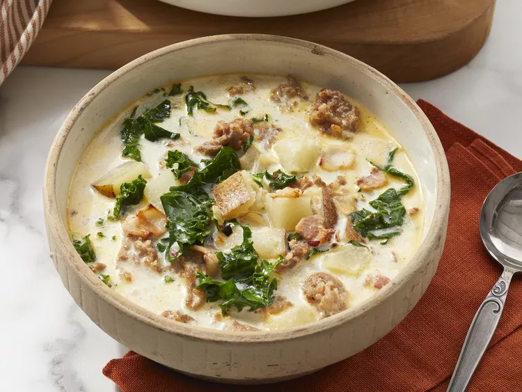

"OG" Zuppa Toscana Soup

Description:
A restaurant-style favorite! Enjoy an "OG" staple from the comfort of home.
Ingredients:
- 1 pound Italian Sausage
- 1 1/2 teaspoons Red Pepper Flakes
- 1 large White Onion, diced
- 4 strips Bacon, diced
- 2 teaspoons Garlic Puree
- 10 cups Water
- 5 cubes Chicken Bouillon
- 1 pound Russet Potatoes, diced
- 1 cup Heavy Whipping Cream
- 1/4 bunch Kale, chopped
Steps:
- Gather all ingredients
- Combine sausage and red pepper flakes in a skillet over medium heat; cook and stir until sausage is brown and crumbly (7-10 minutes). Drain excess fat; transfer sausage to a bowl and set aside.
- Cook onion, bacon, and garlic in the same skillet over medium-low heat until bacon is crisp and onions are soft (10-15 minutes). Set aside.
- Combine water and chicken bouillon in a large pot; bring to a boil. Stir in potatoes; cook until soft (about 15 minutes).
- Pour in cream; simmer until heated through (about 2 minutes). Add sausage, onion mixture, and kale; cook and stir until flavors combine (about 10 minutes).
Home